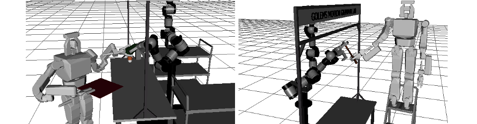

Side Project of the Semester
Research
- Efficient Manipulation Planning using Task Goals
- Grasping unknown objects using superquadrics approximation
- Path Planning for Redundant Robotic Arms
Various previous projects
The Robot vs the Cabinet
| Bin picking, although an inherently simple problem, is not that easy to solve for a robot with such long limb as ours (not to mention his freaking long fingers). Whenever I have free time, I go away from my benchmarking general manipulation problems and investigate how to efficiently generate plans for Crichton to become a future warehouse robot :0} |
Efficient Manipulation Planning using Task Goals
| Our recent work submitted to IROS! In order to grasp an object you have to choose among potentially infinite possibilities, particularly if your arm is redundant. In this work, we investigate how to use the end-comfort effect to help us choose a solution quickly and effectively. |
Grasping Unknown Objects using online Superquadrics Approximation
| I have to add more details here but in short: Does your robot have what it takes to grasp unknown objects in a fast and efficient manner? This work will be presented at ICRA 2015 in May |
Path Planning for Redundant Robotic Arms
| Redundancy is a desired feature in robotic arms. Why? Well, if you have more degrees of freedom (DOF) than you need allows more than one possible way to accomplish a manipulation task. However, this flexibility also arises questions: Which of all alternatives should we choose? Is it possible to list all the possibilities so we can choose "the best"? I propose a determistic method to express these different alternatives by means of discretizing the nullspace of the arm and searching through it. By using diverse heuristic functions, we evaluate the configurations and choose the best depending on our requirements. |
Dynamic Signaling of Robot Teams under Human Supervision
| How many robots can a human operator reasonably supervise? While many people agree that the number depends on the task to be performed, it is natural that the greater the number of robots the more attention the human supervisor requires. In this project, we implement a mock environment in which 2 robots search for a red object. Once one of them finds it, the robot will approach it to verify the object's identity and then it will fire a visual dynamic signal (moving back and forth) so it catches the supervisor's attention. Simulation made with the Gazebo simulator coupled with ROS to access simulated Kinect and odometry data. |